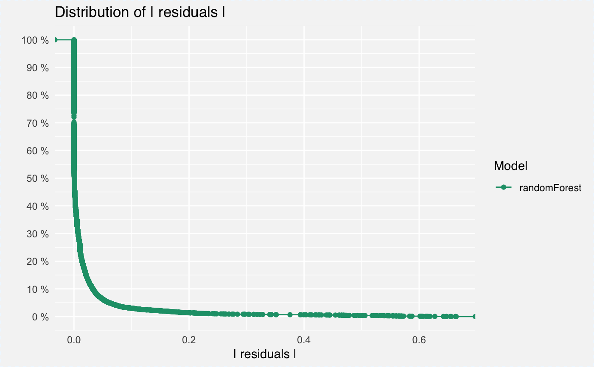
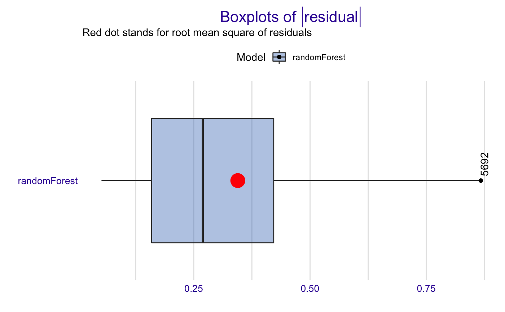
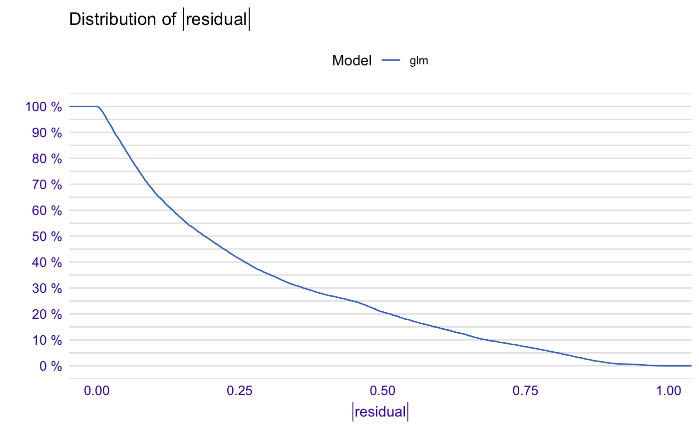
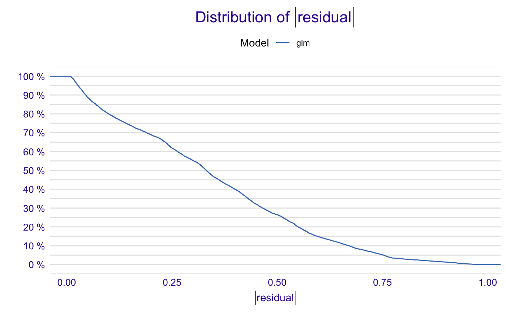
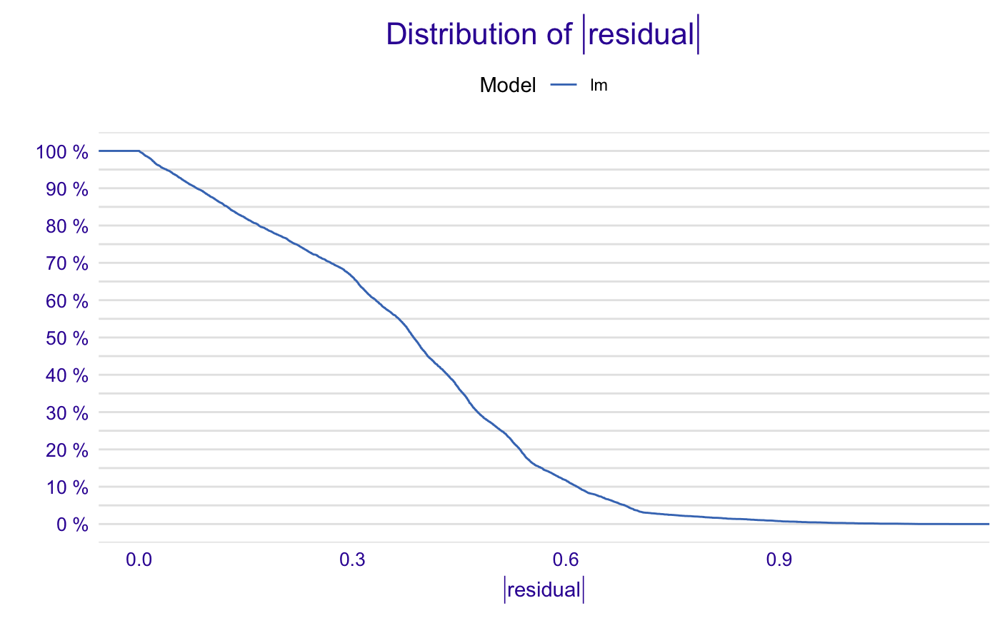
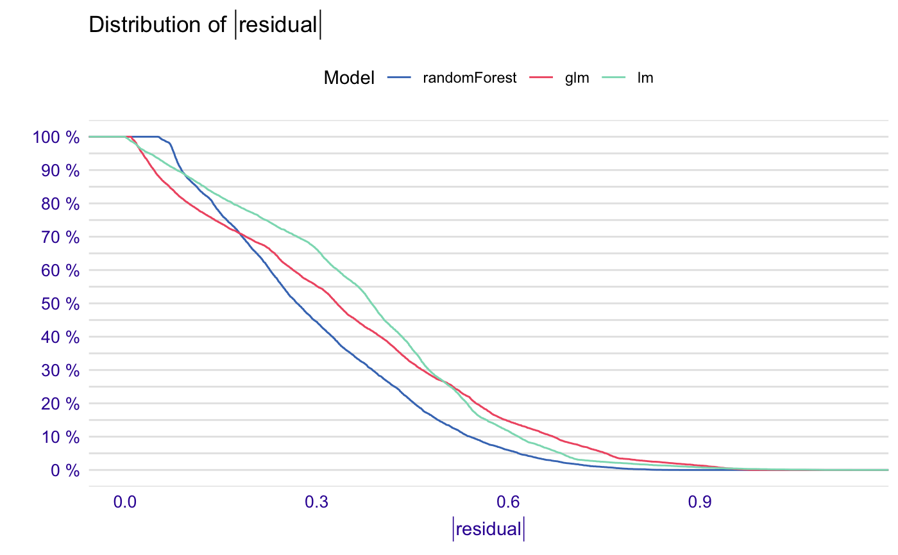
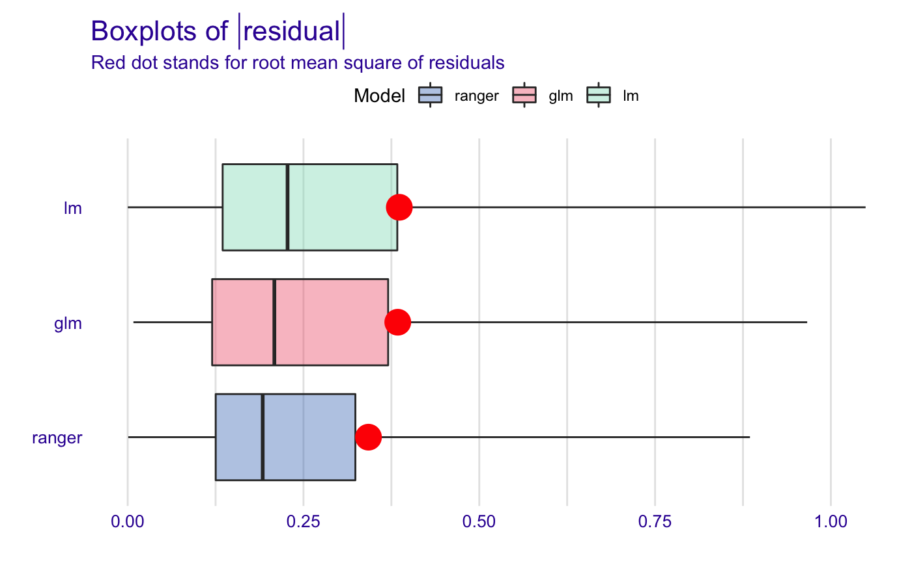
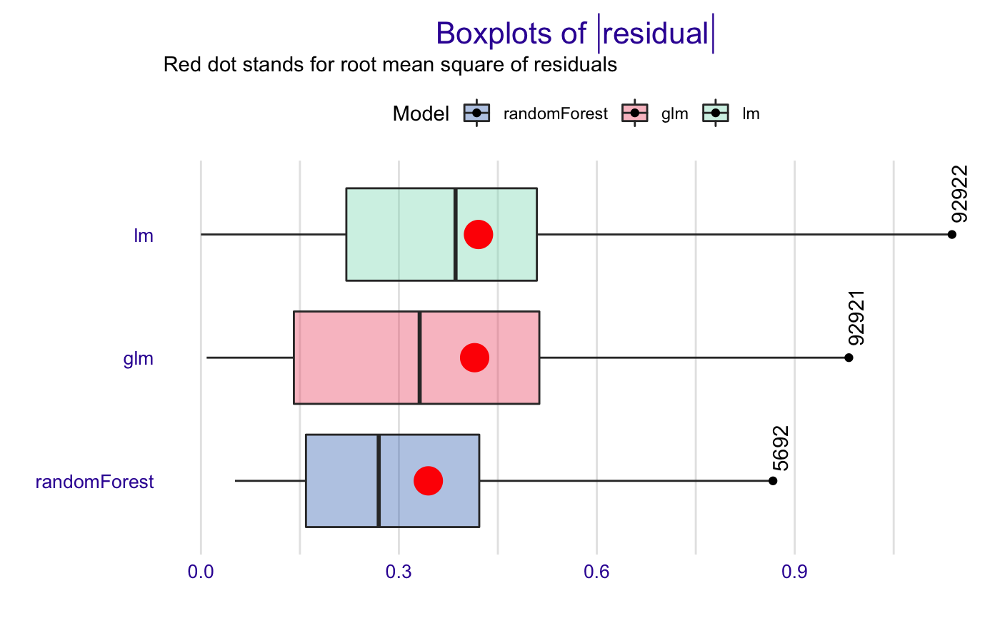

R/plot_model_performance.R
plot.model_performance_explainer.RdPlot Model Performance Explanations
# S3 method for model_performance_explainer plot( x, ..., geom = "ecdf", show_outliers = 0, ptlabel = "name", lossFunction = function(x) sqrt(mean(x^2)) )
| x | a model to be explained, preprocessed by the |
|---|---|
| ... | other parameters |
| geom | either |
| show_outliers | number of largest residuals to be presented (only when geom = boxplot). |
| ptlabel | either |
| lossFunction | function that calculates the loss for a model based on model residuals. By default it's the root mean square. |
An object of the class model_performance_explainer.
# \dontrun{ library("randomForest") HR_rf_model <- randomForest(as.factor(status == "fired")~., data = HR, ntree = 100) explainer_rf <- explain(HR_rf_model, data = HR, y = HR$status == "fired")#> Preparation of a new explainer is initiated #> -> model label : randomForest ( default ) #> -> data : 7847 rows 6 cols #> -> target variable : 7847 values #> -> predict function : yhat.randomForest will be used ( default ) #> -> predicted values : numerical, min = 0 , mean = 0.3589104 , max = 1 #> -> residual function : difference between y and yhat ( default ) #> -> residuals : numerical, min = -0.78 , mean = 0.0049229 , max = 0.74 #> -> model_info : package randomForest , ver. 4.6.14 , task classification ( default ) #> A new explainer has been created!HR_rf_model2 <- randomForest(as.factor(status == "fired")~age + hours, data = HR, ntree = 100) explainer_rf2 <- explain(HR_rf_model2, data = HR, y = HR$status == "fired")#> Preparation of a new explainer is initiated #> -> model label : randomForest ( default ) #> -> data : 7847 rows 6 cols #> -> target variable : 7847 values #> -> predict function : yhat.randomForest will be used ( default ) #> -> predicted values : numerical, min = 0 , mean = 0.3633554 , max = 1 #> -> residual function : difference between y and yhat ( default ) #> -> residuals : numerical, min = -0.48 , mean = 0.0004778896 , max = 0.52 #> -> model_info : package randomForest , ver. 4.6.14 , task classification ( default ) #> A new explainer has been created!HR_glm_model <- glm(status == "fired"~., data = HR, family = "binomial") explainer_glm <- explain(HR_glm_model, data = HR, y = HR$status == "fired", label = "glm", predict_function = function(m,x) predict.glm(m,x,type = "response"))#> Preparation of a new explainer is initiated #> -> model label : glm #> -> data : 7847 rows 6 cols #> -> target variable : 7847 values #> -> predict function : function(m, x) predict.glm(m, x, type = "response") #> -> predicted values : numerical, min = 0.00861694 , mean = 0.3638333 , max = 0.7822214 #> -> residual function : difference between y and yhat ( default ) #> -> residuals : numerical, min = -0.7755901 , mean = -1.293796e-13 , max = 0.9820537 #> -> model_info : package stats , ver. 3.6.1 , task regression ( default ) #> A new explainer has been created!HR_lm_model <- lm(status == "fired"~., data = HR) explainer_lm <- explain(HR_lm_model, data = HR, y = HR$status == "fired")#> Preparation of a new explainer is initiated #> -> model label : lm ( default ) #> -> data : 7847 rows 6 cols #> -> target variable : 7847 values #> -> predict function : yhat.lm will be used ( default ) #> -> predicted values : numerical, min = -0.2620918 , mean = 0.3638333 , max = 0.7150183 #> -> residual function : difference between y and yhat ( default ) #> -> residuals : numerical, min = -0.7083516 , mean = 3.062251e-14 , max = 1.138386 #> -> model_info : package stats , ver. 3.6.1 , task regression ( default ) #> A new explainer has been created!# }